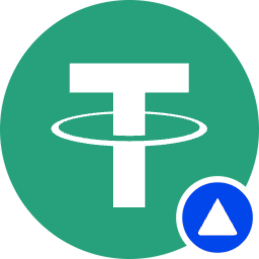

Mini Dollinha MSDD
TRC-20 · TRON mainnet · 6 decimais · supply inicial de 100.000.000.000
Não é o USDT oficial e não tem lastro. Token independente, sem reserva, sem resgate e sem paridade com o dólar. O supply é variável (emissão owner-only). O endereço do contrato é a única identidade.
Contrato
TR7NhDP9ecC1gh1CPUjr2nba8z2gvKLj6t
Tronscan
Supply
100.000.000.000 inicial · 6 decimais
variável: issue() owner-only
Administração
owner TP3fqwTHrEnG5AqbJEUyQbCmmETqUXknvg
mint · blacklist · pause · rename
Liquidez
nenhuma pool criada
sem preço, sem volume
Documentos
- Whitepaper técnico
- token.json (metadata de referência)